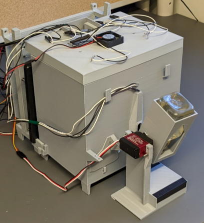
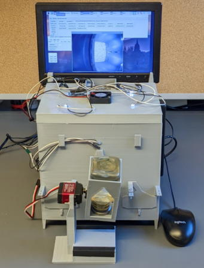
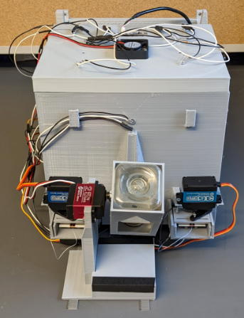
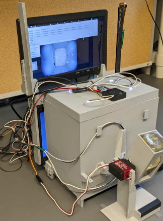
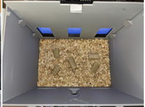
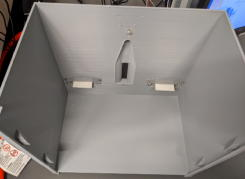
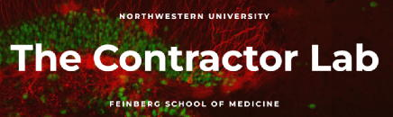

What's Operant House?
Operant House is a homecage-based Operant conditioning chamber which can perform a variety of tasks for mice with touch-screen and retractable levers (It's also available as a conventional, non-homecage Operant chamber). Each unit costs only around $500 because this can be built up with 3D-printed parts and cheap electronics. It is designed not to require specialized knowledge of manufacturing and electronics so average neurobiologis can build it with minimum effort.
Ref:
https://www.biorxiv.org/content/10.1101/2025.01.24.634815v1
This website explains how to produce this device from tool preparation to assembling and handling of the device and equipment of user custom task.
From the left is Touch screen version, Operation monitor version, Retractable lever version, IR sensor bar version.

Features of Operant House
- Fully automated homecage analysis.
- Supported equipments: Sensitive touch panel, Retractable levers, Water reawrd, Reward cue LED, Roof illumination LEDs, Detection of water access.
- Top camera records behavior of animal during task. Six months' worth of video can be recorded.
- Can operate and live-monitor through the remote desktop
- Task result can be sent thorugh email automatically after each session.
- Cheap ($600 each) and can be printed with 3D printer.
- Compact size: W 260 x D 450 x H 280 mm / W 10.2 x D 17.7 x H 11 inches (without operation monitor).
- No electronics knowledge is needed because instruction website is designed for neuroscientists without engineering background.
- User custom task can be added. The instruction site has step-by-step guides to add new sample tasks.
- Automatic water supply function to compliment shortage of water access after the session.
- Multiple sessions can be performed in a day.
- Mask of touch panel is changeable.
- Task switch to the preset next task automatically when it animal achieves criteria. Experimenter don't need to do intervent entire paradigm except water and food supply.
- All preset tasks are designed without using sound cue thus sound proof chamber is not required.
- Support TTL signal and time stamp output to enable to combine with optogenetics and in vivo imaging.
- Raspberry pi can be replaced with windows computer to combine with other devices.
- Can be used as a conventional operant device (non-homecage analysis).
- Full GUI operation.
Introduction video1
Introduction video2
Default tasks
Spatial discrimination (spatial memory)
Visual discrimination (visual memory)
Patern separation
Go-Nogo test
Habitual behavior （perseveration）
Probabilistic reversal spatial learning (perseveration(
Delayed alteration (working memory)
DMTP/DNMTP (working memory)
5CSRTT (attention)
Lever conditioning (learning)
etc.
Feel free to ask any quention on the Google People.
https://groups.google.com/g/operanthouse
Update
2025.10.23 Default values for IR sensor settings were fixed. Revised description of IR sensor bar.
2025.10.22 Part list was updated.
2025.10.08 Added documentation and adaptor part data for Miniscope and set up instruction for an SMTP server for the practice of email-sending function.
Added countermeasures for false detection of the IR sensor bar.
2025.02.01 Website updated.
2024.08.22 Fixed a bug where part data was mistakenly displayed in the software location.
2023.12.27 Corrected the main unit model data.
2023.04.12 Made partial corrections to the optional parts (touch panel) page.
2023.04.07 Fixed an issue where the default value of TouchOffTime in ver0.928 was too short (updated to ver0.929).
2023.04.06 Program update (ver0.928). Modified to allow specifying arbitrary textures for arbitrary panels. Implemented background initialization for panel ROIs.
2023.04.03 Completed implementation of the infrared sensor bar and operation monitor. Updated the program and model data (230331).
2023.03.31 Program and parts data package are updated.
